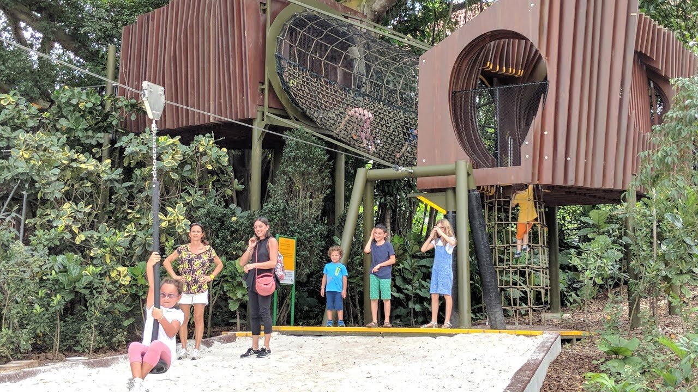
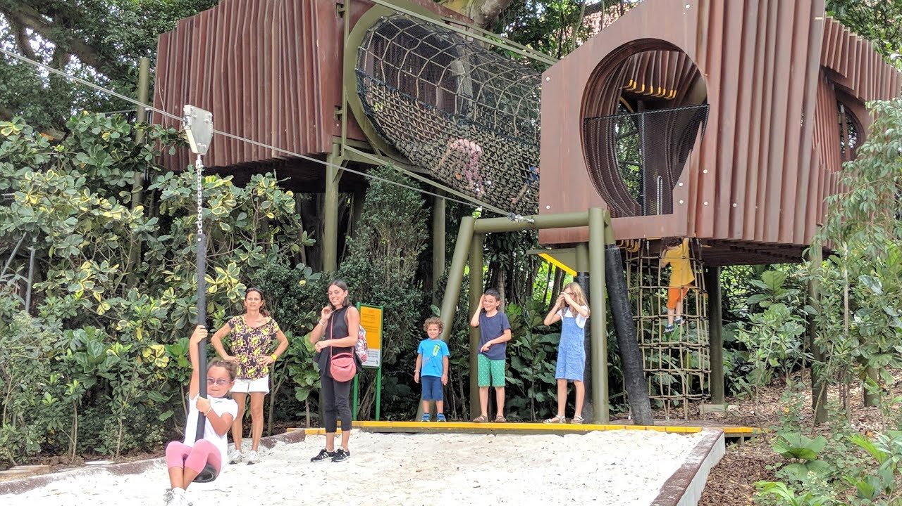

Built 160 years ago, the 82 hectare Singapore Botanic Gardens is an oconic place which boasts a wide array of botanical and horticultural features with rich history.
Loved by travellers and locals, it is the most visited botanic garden in the world.
In 2014, it received incription as a UNESCO World Heritage Site at the 39th session of the World Heritage Committee (WHC).
With over 1000 species and 200 hybrids on display, it is the perfect paradise for orchid lovers.
Opening hours from 0830 - 1900 hours
| Admission fee | Category | Remarks |
|---|---|---|
| $5 | Adult | - |
| $1 | Student | valid student card must be presented |
| $1 | Senior Citizen | above the age of 60 |
 


The first garden in Asia dedicated to children with its theme of 'Life on Earth Depends on Plants' aims to educate and instil a love for nature in children. This garden provides an enriching environment to allow children to delve deeper into the discovery of nature and plants to gain favouable knowledge.
The Garden offers multiple mini trails for a fun learning experience for all children, be it an adventurer or a naturalist. Some of the favourite places to be includes the tree houses, the suspension bridge and many streams and ponds surrounding the garden.
Click on the map to find out more.
Tanglin Entrance
Nassim Entrance
Bukit Timah Entrance